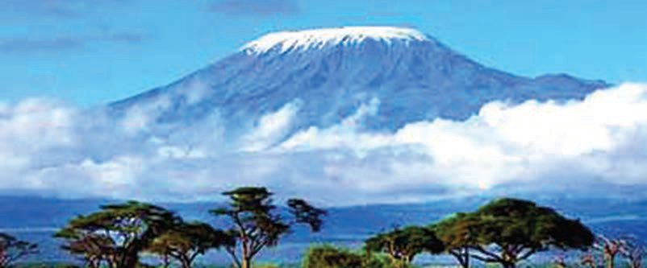

Kielelezo namba 18: Mlima Kilimanjaro
Tanzania kuna maziwa na mito ya asili ambayo ni alama ya urithi nchini. Baadhi ya maziwa yaliyopo nchini ni ziwa Victoria, ziwa Tanganyika, ziwa Manyara, na ziwa Nyasa. Pia, kuna mito mikubwa ya asili mfano, mto Ruaha, Kilombero, Malagarasi, Rufiji, Wami na Ruvuma. Hii ni baadhi ya mito mikubwa ya asili ambayo ni urithi wa asili nchini. Vilevile, misitu na uoto wa asili ni sehemu ya urithi nchini.
Historia ya Tanzania na Maadili STD 3 PB Final.indd 39
29/11/2024 17:14